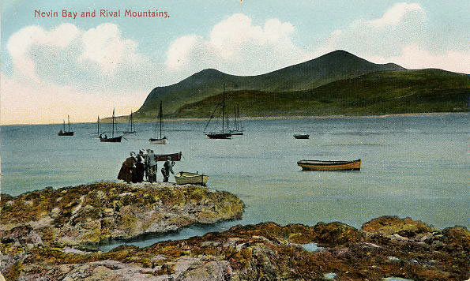

Porthdinllaen et la route à péage

Le long de la côte, au sud-ouest de Tre'r Ceiri, on aperçoit une mince péninsule qui s'étend vers la mer. C'est la
 Porthdinllaen from Bistyll
presqu’île de Porthdinllaen, où subsistent les vestiges des fortifications de l'âge du fer. 'Din' signifie lieu fortifié, et Dinllaen serait donc le nom de l'enceinte fortifié au bout de la péninsule. Puis Dinllaen est devenu le nom d'un cwmwd. Le cantref de Llŷn en comprend trois. Le cwmwd et le cantref sont des divisions territoriales médiévales. Le second élément du nom, 'llaen', ainsi que le nom 'Llŷn' lui-même, vient de la même racine que le toponyme irlandais Laighin (Leinster), un ancien royaume du sud-est de l'Irlande. Il y avait un lien étroit entre Llŷn et l'Irlande pendant l'Antiquité tardive quand il était beaucoup plus facile de traverser la mer que de parcourir les routes du pays.
Porthdinllaen from Bistyll
presqu’île de Porthdinllaen, où subsistent les vestiges des fortifications de l'âge du fer. 'Din' signifie lieu fortifié, et Dinllaen serait donc le nom de l'enceinte fortifié au bout de la péninsule. Puis Dinllaen est devenu le nom d'un cwmwd. Le cantref de Llŷn en comprend trois. Le cwmwd et le cantref sont des divisions territoriales médiévales. Le second élément du nom, 'llaen', ainsi que le nom 'Llŷn' lui-même, vient de la même racine que le toponyme irlandais Laighin (Leinster), un ancien royaume du sud-est de l'Irlande. Il y avait un lien étroit entre Llŷn et l'Irlande pendant l'Antiquité tardive quand il était beaucoup plus facile de traverser la mer que de parcourir les routes du pays.
Au cours des siècles, il y a eu plus d'une tentative d'établir Porthdinllaen comme le port principal pour les navires postaux entre Dublin et le pays de Galles, au lieu du port de Holyhead. La plus célèbre de ces tentatives a eu lieu au début du dix-neuvième siècle, à la suite de l'acte d'union unissant l'Irlande au Royaume-Uni, qui est entré en vigueur au début de 1801, let qui obligeait les députés irlandais de se rendre au parlement à Londres.
Postcard from Borthdinllaen 1908
En 1806, une loi a été adoptée établissant la Porthdinllaen Harbour Company et les travaux ont commencé pour ériger un quai et un hôtel pour les voyageurs. On a donné le nom de Whitehall à l'hôtel, mais les passagers n'y sont jamais restés pour attendre le navire pour Dublin, car le projet a finalement échoué, et Holyhead est resté le principal port de communication avec l'Irlande.
Ships on Porthdinllaen beach 1905
Pourtant, le projet a marqué le paysage. Avant l'adoption de la loi pour développer le port, il y avait une loi en 1803 visant à construire une meilleure route de Porthdinllaen à Capel Curig, y rejoignant la route postale à Londres. Un certain nombre de propriétaires terriens de Llŷn et d'Eifionydd se sont réunis pour créer une fiducie – la Porthdinllaen Turnpike Company – afin d'obtenir du parlement le droit de construire la nouvelle route, investissant un total de £4760 dans le projet. Des équipes de maçons ont été chargé de construire la route et les ponts en modifiant certains tronçons de la route existante et en créant de nouvelles sections. Des péages ont été construits ici et là pour obliger les voyageurs à payer pour utiliser la route.
 Map showing the location of Porthdinllaen from the slopes of The Eifl
Map showing the location of Porthdinllaen from the slopes of The Eifl
Contrairement aux vieilles routes plutôt sinueuses qui existaient auparavant, la nouvelle route à péage devait suivre la ligne la plus droite possible. À partir de Porthdinllaen la route va tout droit vers Boduan, où il y avait une barrière de péage. Là, la route bifurque, avec un embranchement passant par la ville de Pwllheli et l'autre embranchement allant tout droit à travers la campagne vers Llanystumdwy. Là, on voit encore le lieu d'une barrière de péage où la route rejoignait à nouveau l'embranchement de Pwllheli, avant de passer par Llanystumdwy, Cricieth et Tremadog. Depuis Cerrig y Rhwydwr, au-delà de Tremadog, une autre fiducie s'occupait de la route qui montait de Beddgelert et Nant Gwynant jusqu'à Capel Curig.
Le droit de péage a expiré le premier novembre 1874 et les barrières ont été démolies, et les fiduciaires ont fait peu de retour sur l'investissement.